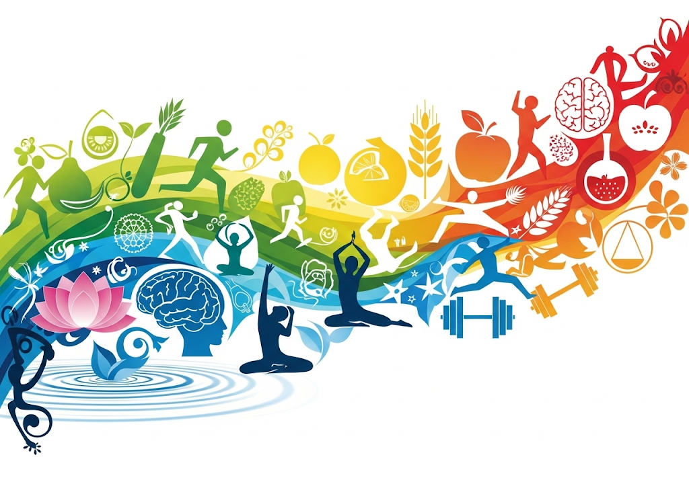

Bem-vindo!
Insira seu nome para começar a sua gincana de bem-estar:
Sua Pontuação
Desafios de Bem-Estar
A Gincana de Bem-Estar
No mundo acelerado de hoje, encontrar tempo e motivação para cuidar da nossa saúde física e mental é um desafio constante. É fácil cair na rotina e deixar de lado os hábitos que realmente nos fazem bem. Mas e se a saúde se tornasse uma aventura divertida? É com essa filosofia que nasceu o projeto "Desafie-se pela Saúde: Sua Gincana de Bem-Estar". Nossa missão é transformar a jornada do autocuidado em uma experiência lúdica e recompensadora.

Transformando Hábitos em Jogo
A gincana utiliza a força da gamificação para incentivar a consistência. Ao invés de uma lista de tarefas tediosa, oferecemos desafios com pontuações. Cada gole de água, cada minuto de meditação, cada passo dado em uma escada se torna uma conquista. Esse sistema de recompensas não só celebra cada pequena vitória, mas também cria um ciclo de motivação que nos encoraja a ir além. Cuidar de si mesmo deixa de ser uma obrigação e se torna uma busca por superação pessoal.
O Impacto na Sua Vida
O projeto vai muito além de uma simples soma de pontos. Ao engajar-se nos desafios, você adquire conhecimento prático e real sobre seu próprio corpo e mente. A gincana é uma ferramenta educativa que o capacita a fazer escolhas mais conscientes e saudáveis no dia a dia. Você descobrirá que o bem-estar é construído passo a passo, e que pequenas mudanças podem gerar resultados significativos e duradouros na sua saúde e qualidade de vida.

Nossos Objetivos
Com o "Desafie-se pela Saúde", esperamos alcançar os seguintes objetivos fundamentais:
- -Hábitos Saudáveis Incentivar a hidratação, a atividade física, a alimentação balanceada e o cuidado com o bem-estar mental de forma lúdica e interativa.
- -Estimular a Conscientização: Aumentar a percepção sobre a importância da saúde e do autocuidado por meio de desafios práticos e testes de conhecimento.
- -Motivar a Rotina Contínua: Oferecer uma ferramenta que encoraje os participantes a manterem uma rotina de bem-estar, fortalecendo a autoeficácia na gestão da própria saúde.
- -Disseminar Informação Relevante: Compartilhar conhecimentos práticos sobre os diferentes pilares da saúde para capacitar os usuários em suas escolhas diárias.